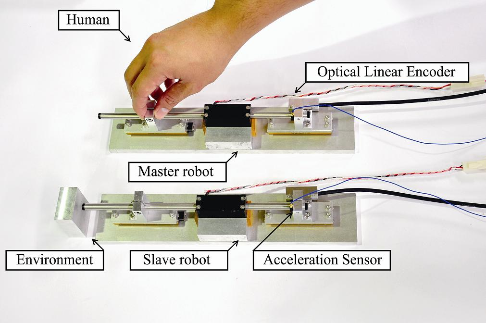
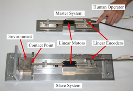
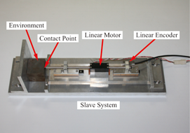

Haptics
|  | |
Bilateral Control
Human recognizes the world by utilizing five senses. Five senses are hearing, sight, smell, taste, haptic and force. However, a radio, telephone, television and internet offer auditory information and visual information. Then, the senses of three are lacking. Therefore, the sense of highly realistic of remote location cannot communication.
A bilateral control is capable of transfer the haptic and force. A bilateral control realizes the transmission of the touch and force by artificially generating action and reaction between master and slave. An above-mentioned photo indicates the experimental equipment of bilateral control. A linear motor (shaft motor) is used as an actuator. If an operator manipulates the linear motor (master), the linear motor (slave) moves synchronously to master. By exchanging each other force that acting on both Master and slave, sensation/haptic is communicated.
Bilateral control can communicate the sensation/haptic between master and slave using an actuator. When this technology is widespread, it will be possible to touch the objects in the screen of the real world. In our laboratory, we study bilateral control from various standpoints.
Motion Copying System
In our laboratory, we also study motion-copying system that it realizes saving and reproduction of the haptic information. Motion-copying system realizes the motion of the human operation using the actuator. Motion-copying system consists of the motion saving system and motion reproduction system. Motion copying system saves the motion of the human operator. Motion reproduction system can reproduce both of the position and force based on a saved data of motion. Thus, the motion-copying system realizes reproduction of the human motion beyond time and space.
 
Motion saving system(Reft), Motion reproduction system(Light)
Using motion-copying system, it is possible to save the operator's operation with various skills. Thus, it is possible to inherit of technology to robot.
Difference between the existing technologies： Motion capture is the method to extract of human's operation. Motion capture is obtained only position information. Meanwhile, motion-copying system can obtain the force information in addition to the position information. Moreover, extracted position and force can reproduce exactly. Therefore, delicate power adjustment is treated. This method is practical technique because it does not use at all of model of the target environment.